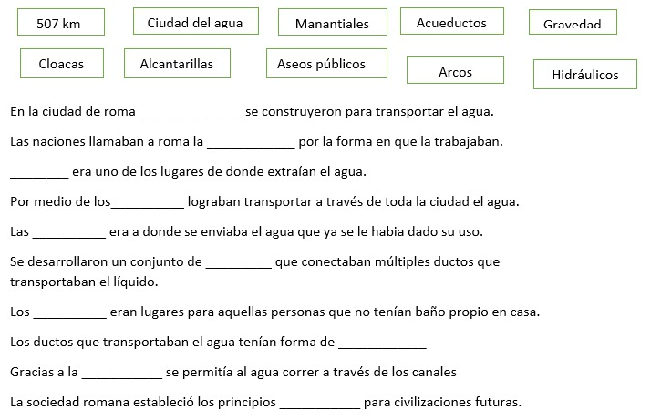

Publicado por: Todos - 09/05/2022
La antigua Roma fue fundada por dos hermanos y semidioses, Rómulo y Remo, esta ciudad, ha sido una de las más importantes del mundo, además de influir en el mundo en muchos aspectos, como económico, cultural, político, etc. Ninguna otra cultura de la antigüedad ejerció un dominio y poder tan grande en términos geográficos como Roma, pero después de ser una de las ciudades más importantes e influyentes del mundo, Roma cayó. Las tropas de visigodo Alarico saquearon Roma y provocaron demasiados problemas en la ciudad, teniendo crisis políticas, militares y territoriales, las cuales fueron las principales causas de la caída.
Estos sucesos han sido los que marcaron el tránsito de la Antigüedad a la Edad Media. Por lo que la ilustre historia del Imperio Romano vivió su último capítulo en el año 476 en Ravena, ciudad que décadas antes fue la capital de este Imperio. El general Odocro desterró y destruyó a Rómulo Augusto, el último emperador, quien no fue el que realmente gobernó, ya que los que estaban detrás de él, fueron Orestes y Odoacro.
A la muerte de este, Orestes intentó buscar fortuna en el Imperio, aunque después se rebelaría y marcharía contra Julio Nepote. Tiempo después Orestes ejerció el mandato y el poder en nombre de su hijo durante diez meses, en los cuales tuvo que hacer frente a una rebelión del ejército y de tropas que escogieron como líder a Odoacro, por lo que la figura e imagen de Rómulo Augusto quedó eliminada. Por lo que, en este blog, hablaremos sobre los impactos que tuvo Roma en el mundo, en diferentes aspectos, escritos por diferentes autores.
Los temas que abarcamos en la elaboración de este blog fueron con el fin de ligar los impactos de Roma en el mundo, con la carrera de cada uno de los integrantes de este blog, las publicaciones presentadas, son:
• Negocios en la Roma durante el Imperio, por el autor Santiago Espinoza
• Los materiales que revolucionaron a Roma, así como el hormigón, ladrillos de arcilla y el mármol, escrito por Juan Carlos Vital
• Ingeniería hidráulica en tiempos del imperio romano, por el autor Daniel Ortega
• ¿Existía la administración en el imperio Romano?, por el autor (a) Daniela Ramírez
• La medicina en el imperio romano, escrito por Gustavo Abreu
Nota: Todas las actividades presentes deben ser realizadas a mano
Publicado por: Santiago Espinoza Montiel - 09/05/2022
La economía del Imperio Romano es uno de los pilares de sustentabilidad que permitió que el Imperio durase tantos años, y siendo el pionero de sistemas económicos de la actualidad.
El Imperio Romano desarrolló su economía durante el 27 A.C y el 476, estaba fundamentada en comercio y agricultura. El estado recibía dinero de los ciudadanos a base de impuestos causados por la posesión y explotación de tierra. Esto funcionaba de manera que las cuentas Romanas eran financiadas por impuestos de entre 5% y 10% de los ingresos. Pero esto no eran todos los ingresos del Imperio, ya que también existían una variante de impuestos indirectos que abarcaban los esclavos, las herencias, los juegos de gladiadores e incluso el comercio de materiales lujosos.
El presupuesto anual de Roma en esa época se ha llegado a estimar bajo diferentes cálculos entre 800 y 900 millones de sestercios, de igual manera, se piensa que 2/3 de los ingresos del fisco procedían de los ingresos obtenidos, de una u otra manera, en Egipto durante el siglo I y parte del II, comenta García.
Debido a que se trata del Imperio Romano; es decir uno de los Imperios más grandes de la historia, es bastante obvio que una gran parte del dinero debía ir destinado hacía financiar su ejército, debido a la gran cantidad territorial que se encontraba a su disposición. Otra gran cantidad de dinero era invertida en el senado, en gastos del palacio, estaciones de correo y mantenimiento de sus calzadas. Estas últimas siendo bastante influyentes en el comercio de y el movimiento de tropas.
Un dato curioso a mencionar; consiste en que el senado y los miembros de su familia tenían prohibido dedicarse al comercio.
La agricultura en el Imperio Romano era uno de los elementos más importantes de la economía, teniendo gran ventaja por el clima mediterráneo del imperio. Como resultado de esto; los principales productos de la agricultura eran el Trigo, la uva y la aceituna.
Según Valeria (2021), en términos generales, la producción agrícola en la antigua Roma la llevaba a cabo tanto los pequeños agricultores como los terratenientes que tenían tierras y recursos disponibles para que los trabajadores y esclavos trabajaran sus tierras para producir cultivos.
Los Romanos comerciaban Vino y aceite de Oliva, los cuáles incluso a día de hoy siguen siendo importados en gran número por Italia y España. Como ya se había mencionado antes, las calzadas tuvieron un papel muy importante en el comercio, debido a que servían como rutas para que los comerciantes pudieran transportar sus mercancías. Estas calzadas eran diseñadas por legiones y trabajadores del imperio y estaban tan bien conectadas que incluso originaron la frase “Todos los caminos llevan a Roma”.
Ahora, es importante recalcar que el comercio Romano no estaba exclusivamente limitado al comercio terrestre, sino que las vías marinas igual jugaban un papel clave en el imperio.
Romero, (2018) nos dice que era un comercio mucho más rápido que el terrestre y que el valor de las mercancías solía ser mucho más valiosa.
López (2020), nos comenta que la minería también tuvo un gran impacto en la economía Romana, el hierro se obtenía de las minas en Galia, el cobre de minas en Britania y el oro en minas de Grecia. Asia menor otorgaba oro, plata, cobre y hierro. Curiosamente, el mármol también jugó un papel remarcable en su minería, y este era obtenido de Egipto, la isla de Paros y el Pentélico.
Al hablar de la economía en Roma, también se tiene que hablar sobre el esclavismo, el cual jugó un papel muy importante. Tomando en cuenta que el imperio Romano utilizaba la mano de obra esclava con mucha frecuencia. Y aunque originalmente se utilizaba con medida, conforme los años del imperio fueron pasando, se empezó a explotar más y más; esto debido a que las muchas expediciones, guerras y conflictos que Roma tenía y había tenido fueron bastante costosas. Esto, hasta que se redujo la época de conquista Romana, que entonces se popularizo la mano de obra asalariada.
El Imperio Romano fue el pionero de muchos sistemas económicos, tuvo una importancia fundamental en el desarrollo del imperio y su longevidad. Además de logrando afrontar la dificultad añadida de financiar no solo una nación bastante amplia, un senado, un palacio sino que un ejército bastante numeroso. Además de que siendo bastante hábil para la creación de calzadas que sirvieran para movilizar rutas de comercio y de tropas. Y también evolucionar y aprovechar su cercanía con el mar para utilizarlo como vía de comercio.
López D.. (01/07/2020). Economía del Imperio Romano . 29/04/2022, de Economipedia Sitio web: https://economipedia.com/historia/economia-del-imperio-romano.html
Valeria Superprof. (06/04/2021). Todo lo que debes saber sobre la economía romana. 01/05/2022, de Super Prof. Sitio web: https://www.superprof.mx/blog/imperio-romano-economia-sociedad/
Romero. F.. (28/05/2018). Cómo era el comercio en la antigua Roma - Resumen. 29/05/2022, de Unprofesor Sitio web: https://www.unprofesor.com/ciencias-sociales/como-era-el-comercio-en-la-antigua-roma-resumen-2418.html
García. G.. (N.F). El comercio exterior durante el Alto Imperio romano. 30/05/2022, de N/A Sitio web: https://ifc.dpz.es/recursos/publicaciones/34/03/18chic.pdf
Resolver la siguiente sopa de letras
Publicado por: Juan Carlos Vital Hernández - 09/05/2022
En este artículo se dará a conocer distintas innovaciones e inventos que fueron fabricados y que ayudaron al desarrollo masivo y muy característico de la civilización en la época del imperio romano, la cual abarca del 27 a.C hasta el mes de septiembre del 476 d.C, que en pocas palabras es la caída de este imperio, también se dará a conocer la suma importancia de la obtención de estos inventos para saber cómo se fue transformando la vida en este imperio y el cómo el pueblo se fue acostumbrando a dichas transformaciones que fueron orientadas principalmente para el beneficio de todos.
Para empezar, de las cosas más características que los romanos dejaron como base y cimiento para la época moderna actual, fue la arquitectura y el cómo su estilo de construcción tan característico sigue siendo parte fundamental en la arquitectura para la actualidad, pero dejando a un lado los estilos romanos, poco se habla de los materiales que estos empezaron a usar para así poder edificar y embellecer a sus hermosas ciudades, iniciando por el famoso ladrillo romano, el cual fue un ladrillo hecho a base de arcilla cocida, la cual sustituyo a los ladrillos de barro secados gracia al calor del sol, ya que se percataron que su producción podría ser a mayor escala, más rápida y hasta cierto punto más moldeable, ya que el ladrillo romano no solo se basaba en láminas rectangulares, sino que lo moldeaban a las formas que a estos se les ocurrieran, desde los convencionales rectángulos hasta los innovadores rectángulos o sus figuras redondeadas, haciendo que la fabricación de hornos en ciudades conquistadas aumentaran, ya que estos se usaban tanto para las construcciones públicas como las privadas.
Otro dato que recalcar, es que, en realidad, el primer hormigón conocido por la humanidad, el cual se cree fue el hormigón Portland, el cual es un hormigón reforzado, no fue creado en el año 1879 por el francés François Hennebique, sino que, en esta misma época, la de los romanos, el arquitecto, escritor, ingeniero y tratadista, Marco Vitruvio Polión, alrededor del 25 a.C en uno de sus muchos tratados donde hablaba de arquitectura que podría revolucionar al imperio, además de ser uno de los textos más antiguos conservados en óptimas condiciones en la actualidad, el “De architectura” habla sobre un material que se podría crear con los morteros de cal, el cual consistía que para una estructura en tierra, como de una edificación, en 1 parte de cal para 3 partes de pozzolana la cual era arena volcánica, la cual contenía aluminio – silíceo en altas cantidades que únicamente lograban obtener gracias al volcán de Pozzuoli, una comunidad campesina ubicada al Este de Italia, muy cerca de la ciudad de Nápoles, y para trabajos bajo el agua recomendaba 2 de cal e igualmente como en las estructuras en tierra, 3 de pozzolana.
Este invento ayudó a que las estructuras del Imperio Romano fueran mucho mejor hechas, ya que se hacia la base con ladrillo romano y se reforzaban con hormigón romano para hacer que las estructuras se pudiesen sostener por si mismas, otra ventaja de reforzar con este, fue que aunque la textura al poner las capas era rugosa y a la vista era feo, se podía alisar para así poder revertirse con mármol, el cual era el material que más ocupaban para poder embellecer sus obra arquitectónicas, o con estuco, el cual era una mezcla de mármol pulverizado, cal, yeso y pigmentos naturales para darle color. Y esto simplemente es unos de los materiales que los Romanos usaban para crear sus ciudades, logrando dejar un legado de arquitectura y edificación que hasta la fecha se siguen usando para poder edificar y aunque en la actualidad se usen más variedad de materiales que incluso pueden llegar a ser de mejor calidad, resistencia, etc., gracias a estos inventos se logró de una forma el estimular el afán de los seres humanos de la actualidad de mejorar estos materiales.
Pura, A. (2019, 28 junio). 8 innovaciones de la arquitectura romana que debes conocer. Arquitectura Pura https://www.arquitecturapura.com/innovaciones-de-la-arquitectura-romana/
de Mercedees95, V. T. L. E. (2016, 15 septiembre). El Tratado de Vitruvio. El Blog de Mer - Blog de Arte https://aldiapormer.wordpress.com/2016/09/15/el-tratado-de-vitruvio/
Romero, S. (2021, 10 marzo). Inventos de la Antigua Roma que aún utilizamos. MuyHistoria.es https://www.muyhistoria.es/h-antigua/fotos/inventos-de-la-antigua-roma-que-aun-utilizamos-731587560829
MásDeArte. (2019). Arquitectura romana: apuntes básicos. masdearte. Información de exposiciones, museos y artistas https://masdearte.com/especiales/arquitectura-romana-apuntes-basicos/
Resolver el siguiente crucigrama
Publicado por: Daniela Judith Ramírez Arguello - 09/05/2022
El imperio romano fue un periodo en el que la civilización siendo muy caracterizado por la forma de gobierno que tenían, de manera autocrática, este tipo de gobierno es una forma en la cual la voluntad de toda una civilización depende de una sola persona.
La administración en roma existía, desde la forma de gobierno, hasta en el tipo de negocios que se realizaban, todos dependían del poder soberano, el rey. La administración se caracterizaba fuertemente por la jerarquización del gobierno romano. Y en este sentido, De Martino (1987) puso de manifiesto que las bases fundamentales del ordenamiento burocrático de la Administra ción pública del Bajo Imperio (siglos IV-VI d. C.) fueron ya establecidas en época del Principado (siglos I-III d. C.), fundamentalmente en tiempo de los emperadores Adriano y Septimio Severo, y añade que "il centralismo e la creazione di una forte burocrazia furono una tendenza caratteristiche dellimpero a partire dallimperatore Adriano. Tale tendenza corrispondeva alle caratteristiche del potere autoritario, dal quale è inseparabile la burocrazia"
Por esto, el código teoosiano y justianino se promulgaron en constantinopla, los cuales son compilaciones de leyes en las cuales la elaboración busaca la iniciativa del Estado. El código Teodosiano fue dictado por el emperador Teodosio II. Por otro lado, el códigoJustianino, es una compilación de constituciones imperiales dictadas por el emperador Justianino. Ambos códigos funcionaban para determinar responsabilidades y obligaciones hacia los gobernadores, así mismo como para mantener la economía a flote y evitar a toda costa la negligencia de los gobernadores.
Pero este tipo de administración que se manejaba en toma, les costó muchos problemas económicos, ya que según Paul Veyne (1998) “El imperio de la mordid”, ¿por qué? Porque desde los gobernadores hasta los soldados eran saqueadores del estado, por lo que se provocó una crisis política en la cual hicieron que Roma se tambaleara.
Según la teoría de Christian Meier (1980), consideró que la caída de Roma fue causada directamente por la excesiva lucha de poder que ec¡xistía entre los poderosos que ya no pudieron controlarse ante los cambios de Roma, por lo que toda la república que se había construído en base a la administración jerárquica que Roma manejaba, se perdió, y todos los políticos poderosos de esa época tamnbién.
Erich Gruen (1974), también menciona que realmente no se buscaba la caída del sistema político y administrativo de Roma, sino que los problemas comenzaron a hacerse cada vez más grandes y difíciles de controlar en la ciudad, ya que el poder era más importante que la administración pública y económica de Roma.
Para concluir, Roma fue y tuvo una administración política y económica muy parecida a la que se vive en estos tiempos, con luchas de poder, y beneficiando a los más poderosos, por lo que la mayoría de los investigadores intenta profundizar en el aspecto de las similitudes entre la administración en esa época y la nuestra, en las cuales, ya no se busca una “caída”, como lo que pasó en Roma, sino mejorar la civilización.
Vista de Principios básicos de la Administración imperial romana. (z.d.). Revista Digital de Derecho Administrativo. Geraadpleegd op 1 mei 2022, van https://revistas.uexternado.edu.co/index.php/Deradm/article/view/6277/8833#:%7E:text=La%20organizaci%C3%B3n%20de%20la%20A%C3%B3n%20imperial%20romana%20se%20caracteriz%C3%B3%20principalmente,las%20magistraturas%20de%20%C3%A9poca%20republicana
Santos, D. (z.d.). Aspectos de la historia del Imperio Romano: Textos de Morstein-Marx, Rosenstein, Mattingly, Ziolkowski, Grey y Drinkwater. Geraadpleegd op 1 mei 2022, van https://www.memoria.fahce.unlp.edu.ar/libros/pm.527/pm.527.pdf
Beard, M. (2015, 17 oktober). La antigua Roma aÃon importa. El Paìs. Geraadpleegd op 2 mei 2022, van https://elpais.com/cultura/2015/10/14/actualidad/1444839171_082887.html
Civilización Romana - Resumen, ubicación, etapas y características. (s. f.). Características. Recuperado 1 de mayo de 2022, de https://www.caracteristicas.co/civilizacion-romana/
Contestar a las siguientes preguntas
• ¿Por qué Roma influyó tanto en el mundo?
• ¿La administración fue base para la economía?
• ¿Por qué la administración fue tan importante para Roma?
• ¿Por qué las bases de Roma siguen siendo tan importantes en nuestra época?
Publicado por: Daniel Ortega Vazquez - 09/05/2022
Desde el principio de los tiempos el agua ha sido significado de vida, y el que la posea tiene prosperidad en todos los ámbitos. La ingeniería ha estado detrás de las grandes ciudades, tanto en la construcción, en lo militar, tanto como en el agua. En la ciudad de roma antigua no fue la excepción. Planear estratégicamente el desarrollo de toda una ciudad no es nada facil, se deben de ver temas como las calles, tipo de construcción, el sistema hidráulico, entre otros. De esta manera aplicada la ingeniería antigua al agua, se implementaron ciertas estrategias y se innovaron formar de manejar el recurso más valioso. Siglos antes no existían toda la clase de herramientas que existen hoy en día para transportar agua ni nada, así que el imperio romano tuvo que buscar la forma para poder transportarla. Una de las aplicaciones de la ingeniería hidráulica más innovadoras aplicadas en aquel entonces fueron los acueductos, es decir, un conducto formado por canales y caños que transporta el agua, en este caso se trataban de puentes con un estilo de arco, que tenían cierta inclinación para que por efecto de gravedad el agua pudiera correr. El líquido provenía de manantiales, o de alguna toma que estuviera en un lugar distinto y con este sistema lo hacían llegar a Roma. A través de la ciudad se construyeron un total de once acueductos que transportaban el liquido por todos lados, llegando a acumular un total de 507 kilómetros. Con este gran sistema que dejó perplejos a las naciones, se le conocía a Roma como la ciudad del agua.
El otro tema igual de importante que había que solucionar era el manejo de las aguas residuales, después de darle su correspondiente uso, los romanos tenían que encontrar la manera en la que se evacuara esta misma. De ahí que surgieron las cloacas, como las que vemos en nuestra ciudad actual, se desarrollaron un conjunto de alcantarillas que permitían la conexión de múltiples ductos que transportaban el agua previamente utilizada se dice que eran lo suficientemente grandes que hasta una persona podía estar caminando dentro de ellas. Con este sistema se pudieron instalar en distintos puntos de la ciudad aseos públicos como los famosos termas que eran lugares en los que asistían aquellos que no tenían un baño en casa.
Sin duda la gestión del agua le dio al imperio tal poder que sus vecinos quedaban admirados ante tales inventos hidráulicos. Es evidente que estos primeros desarrollos de ingeniería hidráulica pusieron los cimientos para que las civilizaciones consecuentes a la romana aprendieran de las estrategias que ellos mismos emplearon. Hoy en día podemos ver los sistemas de alcantarillas en nuestra ciudad, el drenaje, que llevan el agua sucia a lugares a donde se tratan, así también el sistema de tuberías que traen el agua de algun lago o presa hasta nuestra residencia. En conclusión, se puede decir que la civilización romana sentó las bases de los conceptos hidráulicos que manejamos en la actualidad.
Pan-Montojo, N. (2021, 27 agosto). Roma, el Imperio del agua que sentó las bases de la hidráulica. EL ÁGORA DIARIO.https://www.elagoradiario.com/agua/roma-imperio-agua-hidraulica/#:%7E:text=La%20ingenier%C3%ADa%20hidrol%C3%B3gica%20con%20la,que%20cubriera%20una%20necesidad%20existente/
colaboradores de Wikipedia. (2021, 23 septiembre). Ingeniería civil en la Antigua Roma. Wikipedia, la enciclopedia libre. https://es.wikipedia.org/wiki/Ingenier%C3%ADa_civil_en_la_Antigua_Roma#:%7E:text=La%20ingenier%C3%ADa%20civil%20fue%20uno,de%20hoy%20en%20perfecto%20estado
García, J. J. A. (2019, 16 mayo). Acueductos. El orgullo de Roma. iAgua. https://www.iagua.es/blogs/juan-jose-argudo-garcia/gestion-agua-distintas-civilizaciones-grecia-actualidad-iii
Laboratorio Rtve.es. (2019, 11 febrero). Las termas de Los Bañales. Las Claves. http://www.rtve.es/las-claves/-como-eran-las-termas-romanas--2019-02-11/#:%7E:text=%C2%BFQu%C3%A9%20eran%20las%20termas%20romanas,una%20funci%C3%B3n%20social%20y%20pol%C3%ADtica
Completar las siguientes frases
Publicado por: Gustavo Iran García Abreu - 09/05/2022
El artículo que estoy a punto de realizar comprende de los aspectos más relevantes de la Medicina en la Antigua Roma, un parteaguas de una era de conocimientos médicos que ayudaran a las sociedades de Roma y cercanas a ellas a poder protegerse y curarse de las enfermedades que atacaban a los habitantes, es por ello que es importante reconocer el cómo la medicina hipocrática influyo en los autores, científicos, y médicos romanos, para poder llevar al mando los siglos de la medicina, en el cual se salvaron millones de vidas con conocimiento de expertos en la materia.
Es por ello que entre los siglos III a.c y VI d.c la Medicina en Roma se empezó a desarrollar inicialmente en el pesar religioso, tenían una deidad llamada Dea Salus que reinaba sobre todas las otras deidades que al igual tenían que ver con la enfermedad , así como Febris, la diosa de la fiebre, Uterina, la diosa que veía los asuntos ginecológicos de las mujeres de esa época, es muy notable pensar que Plinio el Viejo, un escritor y militar romano, explorador de la naturaleza en la antigüedad, se dedicó a recoger todo el saber sobre el mundo natural, las personas, un poco de la medicina, flora y fauna;
El menciono con mucho orgullo que la antigua roma era “saludable sin médicos, pero no sin medicina”, ya que la practica medica en esos tiempos era muy diferente, a diferencia de muchas otras culturas, la medicina sobrenatural romana, conservo su popularidad con los habitantes hasta mucho después de la caída del imperio romano, su obsesión religiosa le permitió integrarse al Imperio Bizantino y junto con ellas prevalecieron toda la Edad Media. (Plinio el Viejo)
Algo que hay que reconocer es el libro “De Medicina” de Celso, en el cual, con su enriquecido saber hipocrático con conceptos alejandrinos, usa una terapéutica farmacéutica, dietética y quirúrgica, después de muchos años de aprendizaje y realización, en el cual también hace críticas sobre los actuales presentes que realizaban la práctica médica, su libro muy importante en la historia de la medicina contiene fragmentos de anatomía que explicaba que este autor y científico sabia del tema, pero solo al médico practico.
Celso explicaba la forma como debía el médico inspirar la confianza de sus enfermos: “Un médico práctico de experiencia no toma del brazo al paciente al entrar a verlo, sino que primero se sienta y con semblante jovial le pregunta cómo se siente; y si el enfermo tiene algún temor, le conversa animadamente, y sólo despues, extiende su brazo y toca al paciente; después, prediciendo el curso de la enfermedad, el médico logra aumentar la confianza del enfermo, antes de intentar el tratamiento”. (Celso. “De la Medicina”).
Algunos síntomas y signos se analizan conforme a la tradición hipocrática, pero en mi parecer una de las partes más importantes acerca de la terapéutica quirúrgica de la sección quirúrgica dice así:
“La tercera parte del arte de la medicina es la que cura con las manos no omite medicamentos y dietas reguladas, pero hace la mayor parte con las manos, El cirujano debe ser joven o más o menos, con una mano fuerte y firme que no tiemble, listo para usar la izquierda igual que la derecha, con visión aguda y clara, y con espíritu impávido. Lleno de piedad y de deseos de curar a su paciente, pero sin conmoverse por sus quejas o sus exigencias de que vaya más aprisa o corte menos de lo necesario; debe hacer todo como si los gritos de dolor no le importaran.” ( De Medicina , Celso )
Algo muy importante de conocer, es que la medicina romana es esencialmente griega, aunque los romanos agregaron el saneamiento ambiental, la legislación de la práctica y de la enseñanza de la medicina y también implementaron los hospitales militares para poder atender a sus tropas que ayudaban en las batallas por los territorios romanos, es importante conocer que el imperio romano es uno de los que más conquisto, tuvo muchos años de imperio y necesitaban médicos para poder subsistir.
Los hospitales militares se hicieron ya que había una necesidad impuesta por el crecimiento del imperio Romano, esto para poder transportar a los heridos a lugares donde pudieran ser atendidos y realizarles prácticas médicas, en cuanto al saneamiento ambiental, esto se desarrolló ya que hubo un sistema de drenaje que se vaciaba en el rio Tíber , un rio muy popular en el imperio, unos mecanismos para proveer agua a la ciudad pero así mismo poder deshacerse de los productos que no son determinados higiénicamente para la sociedad.
Es importante señalar que roma estableció un servicio médico público, en el que pudieran ofrecer servicios gratuitos a las personas que solicitaran ayuda, y con esto terminamos el artículo en base a lo más importante de las prácticas en la medicina romana , información importante a conocer respecto a esa era y a lo que beneficio totalmente a la medicina actual y moderna , gracias a científicos que dieron su vida por desarrollar su materia en específico.
Francisco Zea A., M.D., La Medicina En Roma, En Colombia, librería Digital, recuperado en https://encolombia.com/libreria-digital/lmedicina/humanismo/humanismo-medicinaroma/
Juan Luis Cifuentes, La Medicina del Imperio Romano, La ciencia para todos, recuperado de http://bibliotecadigital.ilce.edu.mx/sites/ciencia/volumen3/ciencia3/154/html/sec_10.html
Miguel de Cervantes, Medicina Hipocrática, Biblioteca Digital de Antropología General, recuperado en: https://www.cervantesvirtual.com/obra-visor/la-medicina-hipocratica/html/eb4cdfa6-c5c0-11e1-b1fb-00163ebf5e63_2.html
Ruiz Agudo, Los privilegios de los Médicos de Roma, Universidad de la Rioja, recuperado en: https://ifc.dpz.es/recursos/publicaciones/19/98/07agudoruiz.pdf
Relacionar